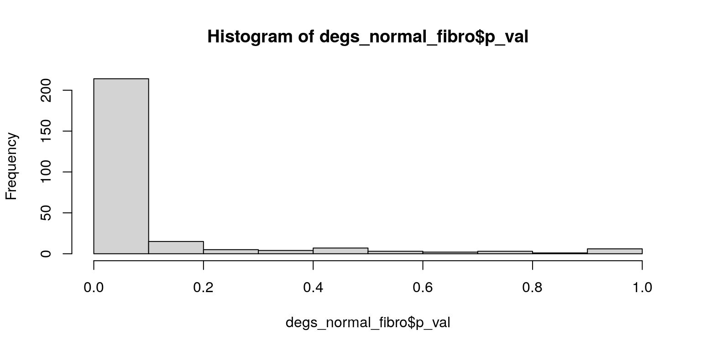

PIPAC Arm 3 pre- and post-treatment comparison
heinin
2025-04-23
Last updated: 2025-04-24
Checks: 5 2
Knit directory: PIPAC_spatial/
This reproducible R Markdown analysis was created with workflowr (version 1.7.1). The Checks tab describes the reproducibility checks that were applied when the results were created. The Past versions tab lists the development history.
The R Markdown is untracked by Git. To know which version of the R
Markdown file created these results, you’ll want to first commit it to
the Git repo. If you’re still working on the analysis, you can ignore
this warning. When you’re finished, you can run
wflow_publish to commit the R Markdown file and build the
HTML.
Great job! The global environment was empty. Objects defined in the global environment can affect the analysis in your R Markdown file in unknown ways. For reproduciblity it’s best to always run the code in an empty environment.
The command set.seed(20240917) was run prior to running
the code in the R Markdown file. Setting a seed ensures that any results
that rely on randomness, e.g. subsampling or permutations, are
reproducible.
Great job! Recording the operating system, R version, and package versions is critical for reproducibility.
Nice! There were no cached chunks for this analysis, so you can be confident that you successfully produced the results during this run.
Using absolute paths to the files within your workflowr project makes it difficult for you and others to run your code on a different machine. Change the absolute path(s) below to the suggested relative path(s) to make your code more reproducible.
| absolute | relative |
|---|---|
| /home/hnatri/PIPAC_spatial/ | . |
| /home/hnatri/PIPAC_spatial/code/PIPAC_colors_themes.R | code/PIPAC_colors_themes.R |
| /home/hnatri/PIPAC_spatial/code/plot_functions.R | code/plot_functions.R |
Great! You are using Git for version control. Tracking code development and connecting the code version to the results is critical for reproducibility.
The results in this page were generated with repository version 281c5e5. See the Past versions tab to see a history of the changes made to the R Markdown and HTML files.
Note that you need to be careful to ensure that all relevant files for
the analysis have been committed to Git prior to generating the results
(you can use wflow_publish or
wflow_git_commit). workflowr only checks the R Markdown
file, but you know if there are other scripts or data files that it
depends on. Below is the status of the Git repository when the results
were generated:
Ignored files:
Ignored: .RData
Ignored: celltype_markers.tsv
Ignored: immune_cluster_marker_annotations.tsv
Ignored: immune_cluster_marker_annotations_2ndpass.tsv
Ignored: main_cluster_marker_annotations.tsv
Ignored: nonimmune_cluster_marker_annotations.tsv
Ignored: nonimmune_cluster_marker_annotations_2ndpass.tsv
Untracked files:
Untracked: MR_PIPACTMA3-Rerun_highres.png
Untracked: Rplots.pdf
Untracked: analysis/arm2_comparative_analysis.Rmd
Untracked: analysis/arm3_DEGs.Rmd
Untracked: analysis/arm3_comparative_analysis.Rmd
Untracked: analysis/arm3_niche_comparison.Rmd
Untracked: analysis/arm3_prepost_plots_DEGs.Rmd
Untracked: analysis/feature_expression.Rmd
Untracked: analysis/hierarchical_clustering.Rmd
Untracked: analysis/niche_construction_n20.Rmd
Untracked: analysis/pca_variance_decomp.Rmd
Untracked: annotation_dimplot.pdf
Untracked: code/construct_niches.R
Untracked: code/plot_metadata.R
Untracked: code/plot_save_pdf.R
Untracked: code/run_rscript.sh
Untracked: code/transcript_contamination.R
Untracked: code/update_metadata.R
Untracked: code/vardecomp.R
Untracked: coh004.pdf
Untracked: demographics_grid.pdf
Untracked: output/outputFile-Meanplot.pdf
Untracked: output/outputFile-Variance.csv
Untracked: output/outputFile-VarianceExplained-Boxplot.pdf
Untracked: output/scrna-Meanplot.pdf
Untracked: output/scrna-Variance.csv
Untracked: output/scrna-VarianceExplained-Boxplot.pdf
Untracked: output/vardecomp.tsv
Untracked: tissue_celltypeprop_scatter.pdf
Unstaged changes:
Modified: analysis/add_metadata.Rmd
Modified: analysis/annotation_2nd_pass.Rmd
Modified: analysis/index.Rmd
Modified: analysis/niche_construction.Rmd
Modified: analysis/plot_by_group.Rmd
Modified: analysis/splitting_samples.Rmd
Modified: code/PIPAC_colors_themes.R
Note that any generated files, e.g. HTML, png, CSS, etc., are not included in this status report because it is ok for generated content to have uncommitted changes.
There are no past versions. Publish this analysis with
wflow_publish() to start tracking its development.
Load packages
suppressPackageStartupMessages({
library(workflowr)
library(arrow)
library(Seurat)
library(SeuratObject)
library(SeuratDisk)
library(tidyverse)
library(tibble)
library(ggplot2)
library(ggpubr)
library(ggrepel)
library(googlesheets4)
library(workflowr)
library(patchwork)
library(ggpmisc)
library(scProportionTest)})Environment variables and helper functions
setwd("/home/hnatri/PIPAC_spatial/")
set.seed(9999)
options(scipen = 99999)
options(ggrepel.max.overlaps = Inf)
source("/home/hnatri/PIPAC_spatial/code/PIPAC_colors_themes.R")
source("/home/hnatri/PIPAC_spatial/code/plot_functions.R")
# Calling DEGs between two groups for each cell type
get_DEGs <- function(seuratdata, celltypes, groupvar, group1, group2){
#message(xx)
DEGlist <- lapply(celltypes, function(xx){
data_subset <- subset(seuratdata, subset = Annotation == xx)
Idents(data_subset) <- as.character(unlist(data_subset[[groupvar]]))
if (min(table(unlist(data_subset[[groupvar]])))<20){
return(NULL)
}
if (all((c(group1, group2) %in% unlist(data_subset[[groupvar]]) == c(T, T)))){
markers <- FindMarkers(data_subset,
ident.1 = group1,
ident.2 = group2,
assay = "RNA",
verbose = F)
markers$feature <- rownames(markers)
markers$celltype <- xx
return(markers)
} else {
return(NULL)
}
})
as.data.frame(do.call(rbind, DEGlist))
}Marker information
gs4_deauth()
metadata <- gs4_get("https://docs.google.com/spreadsheets/d/1sXXwOreLxjMSUoPt79c6jmaQpluWkaxA5P5HfDsed3I/edit?usp=sharing")
markers <- read_sheet(metadata, sheet = "Markers")
second_pass_nonimmune <- read_sheet(metadata, sheet = "Tumor 2nd pass")
second_pass_immune <- read_sheet(metadata, sheet = "Immune 2nd pass")
# Cell type markers by group
gs4_deauth()
markers_by_group <- gs4_get("https://docs.google.com/spreadsheets/d/1w0wrL-5KwNEWi_VpmriN7YmfwpBPlEYX0MKlwI2ZQu8/edit?usp=sharing")
markers_by_group <- read_sheet(markers_by_group, sheet = "Markers by group")Import and subset data
seurat_data <- readRDS("/tgen_labs/banovich/PIPAC/Seurat/PIPAC_NC50_NN20_PC20_Seurat_annotated_metadata_niches.rds")
DefaultAssay(seurat_data) <- "RNA"
VariableFeatures(seurat_data) <- rownames(seurat_data)
seurat_data <- seurat_data %>%
NormalizeData() %>%
ScaleData()
seurat_arm3 <- subset(seurat_data, subset = Arm == "Arm3")
seurat_arm3 <- seurat_arm3 %>%
NormalizeData() %>%
ScaleData()
length(unique(seurat_arm3$Patient_ID))[1] 7length(unique(seurat_arm3$Sample))[1] 28unique(seurat_arm3$Timepoint)[1] "6" "0"arm3_tumor <- subset(seurat_arm3, subset = Tissue == "Tumor")
arm3_tumor <- arm3_tumor %>%
NormalizeData() %>%
ScaleData()
table(arm3_tumor$Patient_ID)
COH-022 COH-038 COH-045 MFL-040 MFL-043 MFL-046 MFL-049
3129 11811 7838 16227 15649 22360 14658 table(as.character(arm3_tumor$Sample))
20-010121T_(2_5_24) 20-010121T_(3_26_24) 20-010121T_(5_7_24)
6203 16157 9158
20-010121T_(6_19_24) BSJ-38-1 BSJ-38-3
5500 6315 5496
JM-45-1 JM-45-3 SF230726-002257
5191 2647 11105
SF230912-002063 SF230915-002249 SF231027-005404
5122 12437 3212
SS-22-1 SS-22-3
2328 801 arm3_tumor@meta.data %>%
dplyr::select(c("Patient_ID", "Sample")) %>%
distinct() Patient_ID Sample
BSJ-38-3_TMA8_aaaalbkj-1_9 COH-038 BSJ-38-3
SS-22-1_TMA8_aaagdmde-1_9 COH-022 SS-22-1
20-010121T_(2_5_24)_TMA8_aacmgcaa-1_9 MFL-046 20-010121T_(2_5_24)
20-010121T_(6_19_24)_TMA8_aacodpjo-1_9 MFL-049 20-010121T_(6_19_24)
SF230726-002257_TMA8_abompjkc-1_9 MFL-040 SF230726-002257
SF231027-005404_TMA8_admleojl-1_9 MFL-043 SF231027-005404
JM-45-1_TMA9_aaabjfbe-1_10 COH-045 JM-45-1
SS-22-3_TMA9_aagjmgfm-1_10 COH-022 SS-22-3
BSJ-38-1_TMA9_aameglle-1_10 COH-038 BSJ-38-1
JM-45-3_TMA9_abehepnb-1_10 COH-045 JM-45-3
20-010121T_(5_7_24)_TMA9_ablkgbhj-1_10 MFL-049 20-010121T_(5_7_24)
SF230915-002249_TMA9_accaokgb-1_10 MFL-043 SF230915-002249
SF230912-002063_TMA9_aecjangm-1_10 MFL-040 SF230912-002063
20-010121T_(3_26_24)_TMA9_aelaglgk-1_10 MFL-046 20-010121T_(3_26_24)arm3_normal <- subset(seurat_arm3, subset = Tissue == "Normal")
arm3_normal <- arm3_normal %>%
NormalizeData() %>%
ScaleData()
table(arm3_normal$Patient_ID)
COH-022 COH-038 COH-045 MFL-040 MFL-043 MFL-046 MFL-049
6599 5515 6967 11290 8315 6499 7248 table(as.character(arm3_normal$Sample))
20-010121N_(2_5_24) 20-010121N_(3_26_24) 20-010121N_(5_7_24)
3859 2640 2463
20-010121N_(6_19_24) BSJ-38-2 BSJ-38-4
4785 2395 3120
JM-45-2 JM-45-4 SF230726-002256
2877 4090 4156
SF230912-002062 SF230915-002250 SF231027-005405
7134 3655 4660
SS-22-2 SS-22-4
2878 3721 arm3_normal@meta.data %>%
dplyr::select(c("Patient_ID", "Sample")) %>%
distinct() Patient_ID Sample
20-010121N_(3_26_24)_TMA8_aaacehok-1_9 MFL-046 20-010121N_(3_26_24)
SF230912-002062_TMA8_aagpdaej-1_9 MFL-040 SF230912-002062
SF230915-002250_TMA8_aapkmjjf-1_9 MFL-043 SF230915-002250
BSJ-38-2_TMA8_abgdjnnp-1_9 COH-038 BSJ-38-2
JM-45-4_TMA8_aedpaehf-1_9 COH-045 JM-45-4
20-010121N_(5_7_24)_TMA8_aeecfihf-1_9 MFL-049 20-010121N_(5_7_24)
SS-22-4_TMA8_aeeklhem-1_9 COH-022 SS-22-4
BSJ-38-4_TMA9_aaagjppb-1_10 COH-038 BSJ-38-4
JM-45-2_TMA9_aamalbcp-1_10 COH-045 JM-45-2
SS-22-2_TMA9_abfhegoa-1_10 COH-022 SS-22-2
20-010121N_(6_19_24)_TMA9_abobgfmj-1_10 MFL-049 20-010121N_(6_19_24)
SF231027-005405_TMA9_abokfaoo-1_10 MFL-043 SF231027-005405
20-010121N_(2_5_24)_TMA9_acinkijl-1_10 MFL-046 20-010121N_(2_5_24)
SF230726-002256_TMA9_afbnfahn-1_10 MFL-040 SF230726-002256Tumor cell type proportion differences between timepoints (before and after treatment)
arm3_tumor$PrePost <- ifelse(arm3_tumor$Timepoint == 0, "Baseline", "Treated")
create_barplot(arm3_tumor,
group_var = "PrePost",
plot_var = "Annotation",
plot_levels = sort((unique(arm3_tumor$Annotation))),
group_levels = sort(unique(arm3_tumor$PrePost)),
plot_colors = pipac_celltype_col,
var_names = c("Frequency (%)", ""),
legend_title = "Celltype")prop_test <- sc_utils(arm3_tumor)
prop_test <- permutation_test(
prop_test, cluster_identity = "Annotation",
sample_1 = "Baseline", sample_2 = "Treated",
sample_identity = "PrePost")
permutation_plot(prop_test) +
ggtitle("Baseline vs. treated")
Tumor-adjacent cell type proportion differences between timepoints (before and after treatment)
arm3_normal$PrePost <- ifelse(arm3_normal$Timepoint == 0, "Baseline", "Treated")
create_barplot(arm3_normal,
group_var = "PrePost",
plot_var = "Annotation",
plot_levels = sort((unique(arm3_normal$Annotation))),
group_levels = sort(unique(arm3_normal$PrePost)),
plot_colors = pipac_celltype_col,
var_names = c("Frequency (%)", ""),
legend_title = "Celltype")
prop_test <- sc_utils(arm3_normal)
prop_test <- permutation_test(
prop_test, cluster_identity = "Annotation",
sample_1 = "Baseline", sample_2 = "Treated",
sample_identity = "PrePost")
permutation_plot(prop_test) +
ggtitle("Baseline vs. treated")
DEGs
Tumor
tumor_DEGs <- get_DEGs(seuratdata = arm3_tumor,
celltypes = unique(arm3_tumor$Annotation),
groupvar = "PrePost",
group1 = "Treated",
group2 = "Baseline")
# Distribution of p-values and log2FC
hist(tumor_DEGs$p_val)hist(tumor_DEGs$p_val_adj)hist(tumor_DEGs$avg_log2FC)tumor_DEGs_sig <- tumor_DEGs %>%
filter(p_val_adj < 0.01,
abs(avg_log2FC) > 1.5)
table(tumor_DEGs_sig$celltype)
Endo1 Endo2 Endo3 EpiTumor1 F1 F2 F3 L2
5 3 4 47 3 9 10 1
M1 M2 M4 M6 M8 Meso Peri Plasma1
2 17 11 1 7 10 8 13
Plasma2 Plasma3 Stromal1 Stromal2
3 3 5 2 Tumor-adjacent
normal_DEGs <- get_DEGs(seuratdata = arm3_normal,
celltypes = unique(arm3_normal$Annotation),
groupvar = "PrePost",
group1 = "Treated",
group2 = "Baseline")
# Distribution of p-values and log2FC
hist(normal_DEGs$p_val)hist(normal_DEGs$p_val_adj)hist(normal_DEGs$avg_log2FC)normal_DEGs_sig <- normal_DEGs %>%
filter(p_val_adj < 0.01,
abs(avg_log2FC) > 1.5)
table(normal_DEGs_sig$celltype)
B1 Endo1 Endo2 Endo3 F1 F2 F3 L2 L4 M1 M2 M5 M6
12 7 6 13 3 8 7 17 5 4 3 1 1
M8 Meso Peri
5 9 7 Plotting
#plot_list <- lapply(unique(seurat_arm3$Annotation))DEGs for myeloid, lymphoid, and fibroblast subsets
Tumors, myeloid
sort(unique(arm3_tumor$Annotation)) [1] "B1" "B2" "DC" "Endo1" "Endo2" "Endo3"
[7] "EpiTumor1" "EpiTumor2" "F1" "F2" "F3" "F4"
[13] "L1" "L2" "L3" "L4" "L5" "M1"
[19] "M2" "M4" "M5" "M6" "M7" "M8"
[25] "Mast" "Meso" "Peri" "Plasma1" "Plasma2" "Plasma3"
[31] "Stromal1" "Stromal2" Idents(arm3_tumor) <- arm3_tumor$PrePost
myel_celltypes <- c("B1", "B2", "DC", "Mast", "Plasma1", "Plasma2", "Plasma3",
paste0("M", seq(1,9)))
tumor_myel <- subset(arm3_tumor, subset = Annotation %in% myel_celltypes)
tumor_myel <- tumor_myel %>%
NormalizeData() %>%
ScaleData()
degs_tumor_myel <- FindMarkers(arm3_tumor,
ident.1 = "Treated",
ident.2 = "Baseline",
assay = "RNA",
verbose = F)
degs_tumor_myel$feature <- rownames(degs_tumor_myel)
# Distribution of p-values and log2FC
hist(degs_tumor_myel$p_val)hist(degs_tumor_myel$p_val_adj)hist(degs_tumor_myel$avg_log2FC)degs_tumor_myel_sig <- degs_tumor_myel %>%
filter(p_val_adj < 0.01,
abs(avg_log2FC) > 1.5)
degs_tumor_myel_sig$feature [1] "REG4" "CEACAM6" "EPCAM" "CEACAM8" "TFF3" "CEACAM1" "TSPAN1"
[8] "ERBB3" "ID1" "CDX1" "TACSTD2" "DMBT1" "CTSE" "MZB1"
[15] "ERBB4" "MUC5AC" "IGHG2" "IGLC3" "LCN2" "IGHGP" "CCL15"
[22] "IL22RA1"degs_tumor_myel_sig %>%
dplyr::mutate(across(where(is.numeric), round, 3)) p_val avg_log2FC pct.1 pct.2 p_val_adj feature
REG4 0 -4.791 0.008 0.143 0 REG4
CEACAM6 0 -4.015 0.018 0.141 0 CEACAM6
EPCAM 0 -2.283 0.033 0.141 0 EPCAM
CEACAM8 0 -2.410 0.025 0.116 0 CEACAM8
TFF3 0 -3.067 0.020 0.109 0 TFF3
CEACAM1 0 -2.475 0.028 0.114 0 CEACAM1
TSPAN1 0 -2.668 0.019 0.105 0 TSPAN1
ERBB3 0 -1.667 0.025 0.094 0 ERBB3
ID1 0 -1.737 0.027 0.087 0 ID1
CDX1 0 -1.925 0.019 0.076 0 CDX1
TACSTD2 0 -2.005 0.012 0.062 0 TACSTD2
DMBT1 0 -3.365 0.003 0.035 0 DMBT1
CTSE 0 -2.064 0.008 0.040 0 CTSE
MZB1 0 2.774 0.029 0.007 0 MZB1
ERBB4 0 1.660 0.039 0.013 0 ERBB4
MUC5AC 0 -2.186 0.006 0.029 0 MUC5AC
IGHG2 0 2.351 0.042 0.018 0 IGHG2
IGLC3 0 2.142 0.022 0.006 0 IGLC3
LCN2 0 -1.925 0.008 0.028 0 LCN2
IGHGP 0 2.221 0.045 0.021 0 IGHGP
CCL15 0 -2.078 0.004 0.018 0 CCL15
IL22RA1 0 -1.549 0.002 0.013 0 IL22RA1VlnPlot(tumor_myel,
group.by = "PrePost",
features = degs_tumor_myel_sig$feature,
layer = "data",
pt.size = 0,
ncol = 3) &
theme_classic() &
RotatedAxis()VlnPlot(tumor_myel,
group.by = "Annotation",
split.by = "PrePost",
split.plot = T,
features = degs_tumor_myel_sig$feature,
layer = "data",
pt.size = 0,
ncol = 3) &
theme_classic() &
RotatedAxis()Tumors, lymphoid
lymph_celltypes <- paste0("L", seq(1,5))
tumor_lymph <- subset(arm3_tumor, subset = Annotation %in% lymph_celltypes)
tumor_lymph <- tumor_lymph %>%
NormalizeData() %>%
ScaleData()
degs_tumor_lymph <- FindMarkers(tumor_lymph,
ident.1 = "Treated",
ident.2 = "Baseline",
assay = "RNA",
verbose = F)
degs_tumor_lymph$feature <- rownames(degs_tumor_lymph)
# Distribution of p-values and log2FC
hist(degs_tumor_lymph$p_val)hist(degs_tumor_lymph$p_val_adj)hist(degs_tumor_lymph$avg_log2FC)degs_tumor_lymph_sig <- degs_tumor_lymph %>%
filter(p_val_adj < 0.01,
abs(avg_log2FC) > 1.5)
degs_tumor_lymph_sig$feature[1] "CXCL13"degs_tumor_lymph_sig %>%
dplyr::mutate(across(where(is.numeric), round, 3)) p_val avg_log2FC pct.1 pct.2 p_val_adj feature
CXCL13 0 -2.001 0.009 0.024 0.008 CXCL13VlnPlot(tumor_lymph,
group.by = "PrePost",
features = degs_tumor_lymph_sig$feature,
layer = "data",
pt.size = 0,
ncol = 3) &
theme_classic() &
RotatedAxis()VlnPlot(tumor_lymph,
group.by = "Annotation",
split.by = "PrePost",
split.plot = T,
features = degs_tumor_lymph_sig$feature,
layer = "data",
pt.size = 0,
ncol = 3) &
theme_classic() &
RotatedAxis()Tumors, fibroblast
fibro_celltypes <- paste0("F", seq(1,5))
tumor_fibro <- subset(arm3_tumor, subset = Annotation %in% fibro_celltypes)
tumor_fibro <- tumor_fibro %>%
NormalizeData() %>%
ScaleData()
degs_tumor_fibro <- FindMarkers(tumor_fibro,
ident.1 = "Treated",
ident.2 = "Baseline",
assay = "RNA",
verbose = F)
degs_tumor_fibro$feature <- rownames(degs_tumor_fibro)
# Distribution of p-values and log2FC
hist(degs_tumor_fibro$p_val)hist(degs_tumor_fibro$p_val_adj)hist(degs_tumor_fibro$avg_log2FC)degs_tumor_fibro_sig <- degs_tumor_fibro %>%
filter(p_val_adj < 0.01,
abs(avg_log2FC) > 1.5)
degs_tumor_fibro_sig$feature[1] "FOS" "ERBB4" "REG4" "CEACAM6" "TFF3" "MARCO" "CA9"
[8] "IGHGP" degs_tumor_fibro_sig %>%
dplyr::mutate(across(where(is.numeric), round, 3)) p_val avg_log2FC pct.1 pct.2 p_val_adj feature
FOS 0 1.678 0.124 0.038 0 FOS
ERBB4 0 2.304 0.068 0.015 0 ERBB4
REG4 0 -3.174 0.006 0.041 0 REG4
CEACAM6 0 -2.896 0.005 0.035 0 CEACAM6
TFF3 0 -1.983 0.005 0.017 0 TFF3
MARCO 0 -1.683 0.005 0.015 0 MARCO
CA9 0 -1.652 0.004 0.014 0 CA9
IGHGP 0 1.692 0.012 0.005 0 IGHGPVlnPlot(tumor_fibro,
group.by = "PrePost",
features = degs_tumor_fibro_sig$feature,
layer = "data",
pt.size = 0,
ncol = 3) &
theme_classic() &
RotatedAxis()VlnPlot(tumor_fibro,
group.by = "Annotation",
split.by = "PrePost",
split.plot = T,
features = degs_tumor_fibro_sig$feature,
layer = "data",
pt.size = 0,
ncol = 3) &
theme_classic() &
RotatedAxis()Tumor-adjacent, myeloid
sort(unique(arm3_normal$Annotation)) [1] "B1" "B2" "DC" "Endo1" "Endo2" "Endo3"
[7] "EpiTumor1" "F1" "F2" "F3" "F4" "L1"
[13] "L2" "L3" "L4" "L5" "M1" "M2"
[19] "M4" "M5" "M6" "M7" "M8" "Mast"
[25] "Meso" "Peri" "Plasma1" "Plasma2" "Plasma3" "Stromal1"
[31] "Stromal2" Idents(arm3_normal) <- arm3_normal$PrePost
myel_celltypes <- c("B1", "B2", "DC", "Mast", "Plasma1", "Plasma2", "Plasma3",
paste0("M", seq(1,9)))
normal_myel <- subset(arm3_normal, subset = Annotation %in% myel_celltypes)
normal_myel <- normal_myel %>%
NormalizeData() %>%
ScaleData()
degs_normal_myel <- FindMarkers(normal_myel,
ident.1 = "Treated",
ident.2 = "Baseline",
assay = "RNA",
verbose = F)
degs_normal_myel$feature <- rownames(degs_normal_myel)
# Distribution of p-values and log2FC
hist(degs_normal_myel$p_val)hist(degs_normal_myel$p_val_adj)hist(degs_normal_myel$avg_log2FC)degs_normal_myel_sig <- degs_normal_myel %>%
filter(p_val_adj < 0.01,
abs(avg_log2FC) > 1.5)
degs_normal_myel_sig$feature[1] "CCL13" "CCL19" "POSTN" "IL7R" "CCL21" "CD3E" "CXCL13" "TCF7"
[9] "CD3D" degs_normal_myel_sig %>%
dplyr::mutate(across(where(is.numeric), round, 3)) p_val avg_log2FC pct.1 pct.2 p_val_adj feature
CCL13 0 1.659 0.388 0.135 0.000 CCL13
CCL19 0 -2.256 0.016 0.054 0.000 CCL19
POSTN 0 1.757 0.097 0.038 0.000 POSTN
IL7R 0 -1.855 0.023 0.052 0.000 IL7R
CCL21 0 -1.572 0.017 0.041 0.000 CCL21
CD3E 0 -1.522 0.014 0.032 0.000 CD3E
CXCL13 0 -2.520 0.015 0.034 0.000 CXCL13
TCF7 0 -1.616 0.011 0.026 0.001 TCF7
CD3D 0 -1.814 0.010 0.023 0.002 CD3DVlnPlot(normal_myel,
group.by = "PrePost",
features = degs_normal_myel_sig$feature,
layer = "data",
pt.size = 0,
ncol = 3) &
theme_classic() &
RotatedAxis()VlnPlot(normal_myel,
group.by = "Annotation",
split.by = "PrePost",
split.plot = T,
features = degs_normal_myel_sig$feature,
layer = "data",
pt.size = 0,
ncol = 3) &
theme_classic() &
RotatedAxis()Tumor-adjacent, lymphoid
lymph_celltypes <- paste0("L", seq(1,5))
normal_lymph <- subset(arm3_normal, subset = Annotation %in% lymph_celltypes)
normal_lymph <- normal_lymph %>%
NormalizeData() %>%
ScaleData()
degs_normal_lymph <- FindMarkers(normal_lymph,
ident.1 = "Treated",
ident.2 = "Baseline",
assay = "RNA",
verbose = F)
degs_normal_lymph$feature <- rownames(degs_normal_lymph)
# Distribution of p-values and log2FC
hist(degs_normal_lymph$p_val)hist(degs_normal_lymph$p_val_adj)hist(degs_normal_lymph$avg_log2FC)degs_normal_lymph_sig <- degs_normal_lymph %>%
filter(p_val_adj < 0.01,
abs(avg_log2FC) > 1.5)
degs_normal_lymph_sig$feature [1] "CCL19" "IGKC" "CCL21" "IGHM" "LYZ" "POSTN" "CCL13" "IGHGP"
[9] "JCHAIN" "CD79A" "MKI67" "IGHG2" "IGHG4" "CXCL13" "MMP9" "IGHG1"
[17] "LAMP3" "LILRA4" "IDO1" "FN1" "NCAM1" degs_normal_lymph_sig %>%
dplyr::mutate(across(where(is.numeric), round, 3)) p_val avg_log2FC pct.1 pct.2 p_val_adj feature
CCL19 0 -4.157 0.019 0.186 0.000 CCL19
IGKC 0 -2.681 0.019 0.120 0.000 IGKC
CCL21 0 -3.017 0.021 0.120 0.000 CCL21
IGHM 0 -2.575 0.016 0.081 0.000 IGHM
LYZ 0 -1.885 0.084 0.186 0.000 LYZ
POSTN 0 1.706 0.110 0.034 0.000 POSTN
CCL13 0 1.533 0.096 0.026 0.000 CCL13
IGHGP 0 -2.626 0.008 0.046 0.000 IGHGP
JCHAIN 0 -1.992 0.024 0.071 0.000 JCHAIN
CD79A 0 -3.187 0.005 0.032 0.000 CD79A
MKI67 0 2.050 0.057 0.012 0.000 MKI67
IGHG2 0 -2.124 0.010 0.040 0.000 IGHG2
IGHG4 0 -2.845 0.003 0.025 0.000 IGHG4
CXCL13 0 -2.431 0.018 0.054 0.000 CXCL13
MMP9 0 -3.865 0.003 0.023 0.000 MMP9
IGHG1 0 -2.738 0.015 0.048 0.000 IGHG1
LAMP3 0 -1.925 0.016 0.049 0.001 LAMP3
LILRA4 0 -2.760 0.010 0.036 0.001 LILRA4
IDO1 0 -2.644 0.020 0.053 0.002 IDO1
FN1 0 1.591 0.076 0.030 0.002 FN1
NCAM1 0 1.502 0.063 0.023 0.006 NCAM1VlnPlot(normal_lymph,
group.by = "PrePost",
features = degs_normal_lymph_sig$feature,
layer = "data",
pt.size = 0,
ncol = 3) &
theme_classic() &
RotatedAxis()VlnPlot(normal_lymph,
group.by = "Annotation",
split.by = "PrePost",
split.plot = T,
features = degs_normal_lymph_sig$feature,
layer = "data",
pt.size = 0,
ncol = 3) &
theme_classic() &
RotatedAxis()Tumor-adjacent, fibroblast
fibro_celltypes <- paste0("F", seq(1,5))
normal_fibro <- subset(arm3_normal, subset = Annotation %in% fibro_celltypes)
normal_fibro <- normal_fibro %>%
NormalizeData() %>%
ScaleData()
degs_normal_fibro <- FindMarkers(normal_fibro,
ident.1 = "Treated",
ident.2 = "Baseline",
assay = "RNA",
verbose = F)
degs_normal_fibro$feature <- rownames(degs_normal_fibro)
# Distribution of p-values and log2FC
hist(degs_normal_fibro$p_val)
hist(degs_normal_fibro$p_val_adj)
hist(degs_normal_fibro$avg_log2FC)degs_normal_fibro_sig <- degs_normal_fibro %>%
filter(p_val_adj < 0.01,
abs(avg_log2FC) > 1.5)
degs_normal_fibro_sig$feature[1] "POSTN" "CDKN1A" "SDC1" degs_normal_fibro_sig %>%
dplyr::mutate(across(where(is.numeric), round, 3)) p_val avg_log2FC pct.1 pct.2 p_val_adj feature
POSTN 0 2.839 0.267 0.043 0 POSTN
CDKN1A 0 2.343 0.213 0.035 0 CDKN1A
SDC1 0 1.503 0.042 0.008 0 SDC1VlnPlot(normal_fibro,
group.by = "PrePost",
features = degs_normal_fibro_sig$feature,
layer = "data",
pt.size = 0,
ncol = 3) &
theme_classic() &
RotatedAxis()VlnPlot(normal_fibro,
group.by = "Annotation",
split.by = "PrePost",
split.plot = T,
features = degs_normal_fibro_sig$feature,
layer = "data",
pt.size = 0,
ncol = 3) &
theme_classic() &
RotatedAxis()
sessionInfo()R version 4.3.0 (2023-04-21)
Platform: x86_64-pc-linux-gnu (64-bit)
Running under: Ubuntu 22.04.3 LTS
Matrix products: default
BLAS: /usr/lib/x86_64-linux-gnu/openblas-pthread/libblas.so.3
LAPACK: /usr/lib/x86_64-linux-gnu/openblas-pthread/libopenblasp-r0.3.20.so; LAPACK version 3.10.0
locale:
[1] LC_CTYPE=en_US.UTF-8 LC_NUMERIC=C
[3] LC_TIME=en_US.UTF-8 LC_COLLATE=en_US.UTF-8
[5] LC_MONETARY=en_US.UTF-8 LC_MESSAGES=en_US.UTF-8
[7] LC_PAPER=en_US.UTF-8 LC_NAME=C
[9] LC_ADDRESS=C LC_TELEPHONE=C
[11] LC_MEASUREMENT=en_US.UTF-8 LC_IDENTIFICATION=C
time zone: Etc/UTC
tzcode source: system (glibc)
attached base packages:
[1] grid stats graphics grDevices utils datasets methods
[8] base
other attached packages:
[1] ComplexHeatmap_2.18.0 viridis_0.6.3
[3] viridisLite_0.4.2 circlize_0.4.15
[5] plyr_1.8.8 RColorBrewer_1.1-3
[7] scProportionTest_0.0.0.9000 ggpmisc_0.5.2
[9] ggpp_0.5.2 patchwork_1.1.2
[11] googlesheets4_1.1.0 ggrepel_0.9.3
[13] ggpubr_0.6.0 lubridate_1.9.2
[15] forcats_1.0.0 stringr_1.5.0
[17] dplyr_1.1.2 purrr_1.0.2
[19] readr_2.1.4 tidyr_1.3.0
[21] tibble_3.2.1 ggplot2_3.4.2
[23] tidyverse_2.0.0 SeuratDisk_0.0.0.9021
[25] Seurat_5.0.1 SeuratObject_5.0.2
[27] sp_1.6-1 arrow_12.0.0
[29] workflowr_1.7.1
loaded via a namespace (and not attached):
[1] RcppAnnoy_0.0.20 splines_4.3.0 later_1.3.1
[4] cellranger_1.1.0 polyclip_1.10-4 fastDummies_1.7.3
[7] lifecycle_1.0.3 rstatix_0.7.2 doParallel_1.0.17
[10] rprojroot_2.0.3 globals_0.16.2 processx_3.8.1
[13] lattice_0.21-8 hdf5r_1.3.8 MASS_7.3-60
[16] backports_1.4.1 magrittr_2.0.3 limma_3.58.1
[19] plotly_4.10.2 sass_0.4.6 rmarkdown_2.22
[22] jquerylib_0.1.4 yaml_2.3.7 httpuv_1.6.11
[25] sctransform_0.4.1 spam_2.9-1 spatstat.sparse_3.0-1
[28] reticulate_1.29 cowplot_1.1.1 pbapply_1.7-0
[31] abind_1.4-5 Rtsne_0.16 presto_1.0.0
[34] BiocGenerics_0.48.1 git2r_0.32.0 S4Vectors_0.40.2
[37] IRanges_2.36.0 irlba_2.3.5.1 listenv_0.9.0
[40] spatstat.utils_3.0-3 MatrixModels_0.5-1 goftest_1.2-3
[43] RSpectra_0.16-1 spatstat.random_3.1-5 fitdistrplus_1.1-11
[46] parallelly_1.36.0 leiden_0.4.3 codetools_0.2-19
[49] shape_1.4.6 tidyselect_1.2.0 farver_2.1.1
[52] stats4_4.3.0 matrixStats_1.0.0 spatstat.explore_3.2-1
[55] googledrive_2.1.0 jsonlite_1.8.5 GetoptLong_1.0.5
[58] ellipsis_0.3.2 progressr_0.13.0 iterators_1.0.14
[61] ggridges_0.5.4 survival_3.5-5 foreach_1.5.2
[64] tools_4.3.0 ica_1.0-3 Rcpp_1.0.10
[67] glue_1.6.2 gridExtra_2.3 xfun_0.39
[70] withr_2.5.0 fastmap_1.1.1 fansi_1.0.4
[73] SparseM_1.81 callr_3.7.3 digest_0.6.31
[76] timechange_0.2.0 R6_2.5.1 mime_0.12
[79] colorspace_2.1-0 scattermore_1.2 tensor_1.5
[82] spatstat.data_3.0-1 utf8_1.2.3 generics_0.1.3
[85] data.table_1.14.8 httr_1.4.6 htmlwidgets_1.6.2
[88] whisker_0.4.1 uwot_0.1.14 pkgconfig_2.0.3
[91] gtable_0.3.3 lmtest_0.9-40 htmltools_0.5.5
[94] carData_3.0-5 dotCall64_1.0-2 clue_0.3-64
[97] scales_1.2.1 png_0.1-8 knitr_1.43
[100] rstudioapi_0.14 rjson_0.2.21 tzdb_0.4.0
[103] reshape2_1.4.4 curl_5.0.1 nlme_3.1-162
[106] GlobalOptions_0.1.2 cachem_1.0.8 zoo_1.8-12
[109] KernSmooth_2.23-21 parallel_4.3.0 miniUI_0.1.1.1
[112] pillar_1.9.0 vctrs_0.6.5 RANN_2.6.1
[115] promises_1.2.0.1 car_3.1-2 xtable_1.8-4
[118] cluster_2.1.4 evaluate_0.21 cli_3.6.1
[121] compiler_4.3.0 rlang_1.1.1 crayon_1.5.2
[124] future.apply_1.11.0 ggsignif_0.6.4 labeling_0.4.2
[127] ps_1.7.5 getPass_0.2-4 fs_1.6.2
[130] stringi_1.7.12 deldir_1.0-9 assertthat_0.2.1
[133] munsell_0.5.0 lazyeval_0.2.2 spatstat.geom_3.2-1
[136] quantreg_5.95 Matrix_1.6-5 RcppHNSW_0.5.0
[139] hms_1.1.3 bit64_4.0.5 future_1.32.0
[142] statmod_1.5.0 shiny_1.7.4 highr_0.10
[145] ROCR_1.0-11 gargle_1.4.0 igraph_1.4.3
[148] broom_1.0.4 bslib_0.4.2 bit_4.0.5
[151] polynom_1.4-1